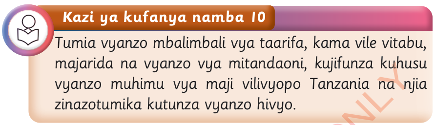

Kutunza vyanzo vya maji katika mazingira yetu

Kazi ya kufanya namba 10
Tumia vyanzo mbalimbali vya taarifa, kama vile vitabu, majarida na vyanzo vya mitandaoni, kujifunza kuhusu vyanzo muhimu vya maji vilivyopo Tanzania na njia zinazotumika kutunza vyanzo hivyo.